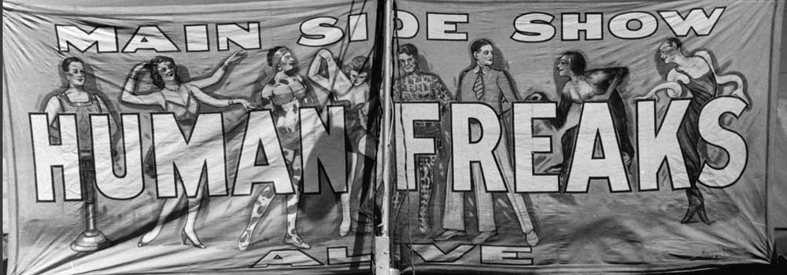
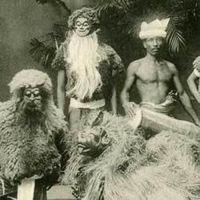

|  |
| Home | Talent | Cosmetic | Deformity | Abnormal | Ethnological |
Human Zoo
Human zoos, also called ethnological expositions, were 19th- and 20th-century public exhibits of humans, usually in a so-called natural or primitive state. The displays often emphasized the cultural differences between Europeans of Western civilization and non-European peoples or other Europeans with a lifestyle deemed primitive. Some of them placed indigenous people in a continuum somewhere between the great apes and humans of European descent. Ethnological expositions have since been criticized as highly degrading and racist. The following is just a few examples of Human Zoos: In the 1870s, exhibitions of exotic populations became popular in various countries. Human zoos could be found in Paris, Hamburg, Antwerp, Barcelona,London, Milan, New York, and Warsaw with 200,000 to 300,000 visitors attending each exhibition. In Germany, Carl Hagenbeck, a merchant in wild animals and future entrepreneur of many European zoos, decided in 1874 to exhibit Samoan and Sami people as "purely natural" populations. In 1876, he sent a collaborator to the Egyptian Sudan to bring back some wild beasts and Nubians. The Nubian exhibit was very successful in Europe and toured Paris, London, and Berlin. In 1880, he also dispatched an agent to Labrador to secure a number of Esquimaux (Eskimo / Inuit) from the moravian mission of Hebron; these Inuit were exhibited in his Hamburg Tierpark. Geoffroy de Saint-Hilaire, director of the Jardin d'acclimatation, decided in 1877 to organize two ethnological spectacles that presented Nubians and Inuit. That year, the audience of the Jardin d'acclimatation' doubled to one million. Between 1877 and 1912, approximately thirty ethnological exhibitions were presented at the Jardin zoologique d'acclimatation. Both the 1878 and the 1889 Parisian World's Fair presented a Negro Village (village nègre). Visited by 28 million people, the 1889 World's Fair displayed 400 indigenous people as the major attraction. The 1900 World's Fair presented the famous diorama living in Madagascar, while the Colonial Exhibitions in Marseilles (1906 and 1922) and in Paris (1907 and 1931) also displayed humans in cages, often nude or semi-nude.[7] The 1931 exhibition in Paris was so successful that 34 million people attended it in six months, while a smaller counter-exhibition entitled The Truth on the Colonies, organized by the Communist Party, attracted very few visitors—in the first room, it recalled Albert Londres and André Gide's critics of forced labour in the colonies. Nomadic Senegalese Villages were also presented. In 1883, native people of Suriname were displayed in the International Colonial and Export Exhibition in Amsterdam, held behind the Rijksmuseum. In the late 1800s, Carl Hagenbeck organized exhibitions of indigenous populations from various parts of the globe. He staged a public display in 1886 of Sinhalese autochthones from theIndian subcontinent. In 1893/1894, he also put together an exhibition of Sami/Lapps in Hamburg-Saint Paul. At the 1901 Pan-American Exposition and at the 1893 World's Columbian Exposition, where Little Egypt performed bellydance, and where the photographers Charles Dudley Arnold andHarlow Higginbotham took depreciative photos, presenting indigenous people as catalogue of "types," along with sarcastic legends.[9] In 1896, to increase the number of visitors, the Cincinnati Zoo invited one hundred Sioux Native Americans to establish a village at the site. The Sioux lived at the zoo for three months.[10] Human Zoos were especially awful forms of racism that constituted themselves as Freak Shows. |